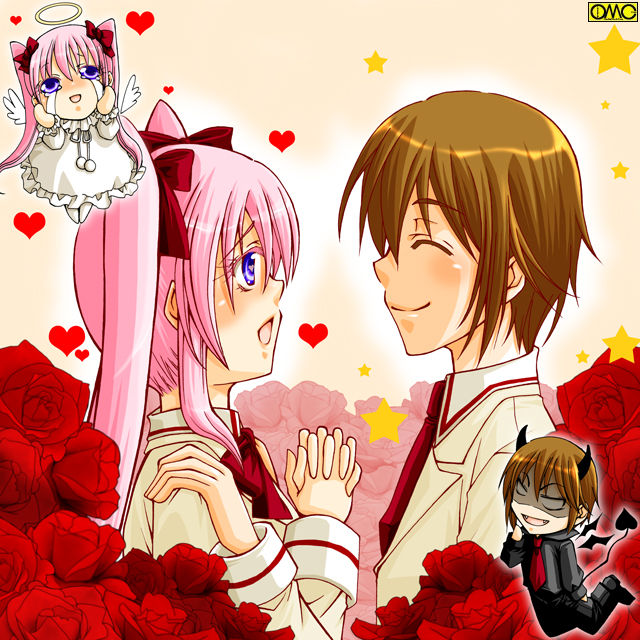

第５話「Ｍａｒｉａ Ｃｌｕｂ」
五月。
蒼空学園は生徒会選挙の時期になる。
前年に生徒会長を務めた二年生が進級して受験に備える。
そして前年度の一年生。新たなる二年生から生徒会長を選出するのだ。
二年生から選出されるのは三年は受験。一年は論外。
受験の制約も軽く、ある程度の経験をつんだ二年生と言うわけである。
五月に行うのはいわゆる「五月病」対策もある。
気を抜けないようにあえてこういうものをぶつけた。
しかしやはり気の入らない季節であるのは確か。
そういう『野心』を持つものは少なく、立候補者は皆無に近かった。
そう。ただ一人。やたらに燃えている少女を除いては。
２年Ｂ組。そのホームルームにおいても、生徒会長選出を議題に立候補者を募っていた。
その瞬間に手を挙げた女子が一人。
「ふっふっふ。ついに来たわ。このときが。わたしが光り輝く時が来たのよ」
陶酔気味に語る。平たく言うと『危ない表情』をしていた。
「とりあえず『おでこ』は充分に光っているわよ。海老沢さん」
可愛い声と容姿なのだが、どうしようもないほど毒舌な２−Ｂ担任。川隅亜彩子だった。
「先生。気にしているんだから止めてください」
立ち上がって抗議する少女。海老沢瑠美奈。
女の子と言うことで誕生した時に「光り輝くように」と願いを込めてルミナス…光にちなんで「瑠美奈」と名づけられた。
だが極端に広いおでこと、極端に短い前髪。そしてやたらに艶のよい肌で本気で光っていた。
それをのぞけばパーツ自体は悪くない。
もう少しバランスよく、上のほうに散らばればかなりの美少女だったが、下にコンパクトにまとまったせいでとにかく目立つおでこである。
「うーん。性的嫌がらせがセクシャルハラスメントなら、これはさしずめ『デコハラ』になるのかしら？」
若干サドッ気もあるとしか思えない２−Ｂ担任。
「そんな装飾過剰なトラックみたいに言わないでくださいっ！」
ヒステリックに瑠美奈が叫ぶと、後ろから見た場合の特徴である太よりのお下げが揺れた。
前髪はロクにないのだが、後方にはかなりのもので下ろせば腰に達しそうである。
それを太く編みこんでいた。
先端部分が広がりエビのシッポのように。だから通称『エビテール』だった。
あまりに特徴的なおでことお下げ。加えて槙原詩穂理や栗原美百合がいるため目立たないが、実はかなりのプロポーション。
顔のバランスはまりあが勝っていたが、ボディとなると瑠美奈に分がある。
「目立ちたいのは同じでしょ？ つまり立候補するのね？」
「もちろんよ。権力は大好きだもの」
大声でいえない台詞をふんぞり返って言う瑠美奈。
「そして当選のあかつきには高嶺まりあを……んーふっふっふっふー」
かなり危ない笑みを漏らすデコ美少女だった。
「くちゅん」
隣のクラスではまりあがくしゃみをしていた。大半の男子の表情が緩む。いわゆる『萌え』と言うそれ。
「うわ。なにこの女。くしゃみまで可愛いのって。どこまで男子人気を獲得すれば気が済むのよ」
ずっと落ち込んでいたなぎさだったが、光明が見えたことで本来の明るさ。ついでになれなれしさも取り戻してまくし立てる。
「し……仕方ないじゃない。くしゃみの仕方なんて選べないわよ」
照れて抗議する声や表情も可愛らしい天然アイドルのまりあ。
「はい。授業中ですよ。お口にチャック」
こちらも可愛い大人の担任・木上以久子が窘める。肩をすくめる女子高生二人。
「それで誰か立候補しませんか？ 生徒会長に」
司会を任されていた委員長の詩穂理が議事を進行する。しかし誰も手を挙げない。
それももっともだ。そんな面倒なことを進んでやろうとする人間がいなくても不思議はない。
「仕方ないわねぇ」
やる気を見せない生徒たちに憂い顔の担任。
「でも本人の意思を尊重しないで推薦しても良くないから、ウチのクラスは候補者なしと言うことで良いかしら？」
反論はない。全員の意思とみなされ、なんとものんびりした裁定が下された。
しかしこれが他のクラスでもとなるとややこしい。
公示日。その昼休み。食堂と言う各教室をのぞけば最も人の集まる場所に告知ポスターが。
候補がなんと海老沢瑠美奈だけである。
「これじゃ選挙にならないよね」
告知ポスターをみて単純になぎさがそういう。
「それじゃ海老沢さんがそのまま生徒会長に？」
美鈴も深く考えないで続く。
「いえ。それはないですよ。失礼ですが海老沢さんが基準に達していないと言う危険性もあります」
「その場合どうするのかしら？」
事務的に堅い印象の詩穂理に、容姿に恵まれたまりあが可愛らしく尋ねる。
「恐らくは信任・不信任を投票で決めることになるのではないかと」
「それで当選しないと振り出しってワケ？」
それは大変だなぁとまりあが人事のように考えた。
痴漢騒動の一件がきっかけで四人は行動を共にするようになった。
理由は全員一致。好きな少年に接近するため。
いわば共同戦線である。
改めて整理と紹介をしよう。
一番小柄な少女。南野美鈴。髪も短い。ちなみにソックスも短い。
自己代名詞が存在せず、自分を下の名前で呼んだり、子供服がそのまま着られる体格。
そして学業も運動も苦手なものが多かった。
だが家庭的なことなら何でもござれ。特に料理の腕は逸品である。
彼女の好きな男子は対照的に２メーター近い巨漢。大地大樹。
だが彼は端整ではあるが無表情。リーゼント。無口。そしてその巨体で距離を置かれたり、反対に挑戦されたりしていた。
本当は「気は優しくて力持ち」なのだが、口下手。そして無口がたたり理解しているのが一部の人間だけ。
女子では幼なじみの美鈴。妹の双葉。
双葉を溺愛しているが『兄妹』故にこれはさすがに自重。ただし、実は血の繋がりがないことを兄も妹も知らない。
その秘密を背負ってしまったのが美鈴である。
大樹を恐れない女子はいても、笑顔まで投げかけたのは詩穂理だけであった。
だがそれも実家が本屋で、客にするのと同様の愛想である。
しかしそれでも大樹には強烈であった。
無口な彼が積極的に話しかけるのは詩穂理だけである。
だから詩穂理に取られないように。そして詩穂理に近づく大樹に歩み寄るため美鈴は詩穂理と行動を共にしている。
だからといって友情が皆無ではない。
その詩穂理はやはり幼なじみの風間裕生に恋していた。
生来は右利きだったのに、左利きの裕生のマネをしているうちに、筆記具も箸も左手で持つようになってしまったほどだ。
それゆえ上半身と下半身がばらつくのか。
それとも元々なのか学業が学園一なのに対して、運動に関しては一年を含めても全校生徒で最下位と当の本人が断言している。
身長１５６に対して９２センチもあるＧカップバストが邪魔なのも理由の一つ。
またそのバストが本人にとっては疎ましい存在であった。
理由は男のぶしつけな視線。
さらには自分とそっくりのアダルトビデオの女優が存在していたと指摘された。
皮肉にも詩穂理の方が胸が大きくて同一人物説は消えた。
事務的な敬語使用で印象が鈍いが、声は案外と可愛らしい。それもＡＶ女優がハスキーゆえ別人説に役だった。
逆に言えばそうでもないと混同しかねないほど似ていた。
それは詩穂理の顔が「エッチな顔」と言うことでもあり、本人はそれをひどく嫌っていた。
そのため中学時代は手間の掛からないショートカットだったが、女優との区別でロングにした。
若干重たい印象だが、手入れの行き届いた黒髪は美しかった。
実はこの長さは校則に抵触するのだが、その美しさゆえに見逃されていたところもある。
なによりその「エッチな顔」をさらされるとたまらない。
教師だって若い男性もいる。落ち着かない。
だから詩穂理が顔を隠すために髪を伸ばしているのは、みて見ぬふりをされていた。
これは生徒たちも同様。女子はやっかみがありそうなものだが、向こうが勝手に野暮ったくメガネと前髪で顔を隠してくれるならと突っ込まないでいた。
そうでなくてもその胸元は男子キラーだった。
恋愛対象の裕生は将来はスーツアクターないしスタントマン志望。
父親がかつては同じ職にあり、自分の大好きなヒーローの正体が父親と知った時の興奮が未だに彼をその道へと突き進ませていた。
それだけに運動は抜群。また役者志望だけにチームプレイも大事にする。
つまり個人競技も団体競技も抜群にこなせる。
反面学業は芳しくなく、たまに詩穂理に教えられているときもある。
詩穂理も頼られたならと意気に感じて、丁寧に教える。
スタントに対する思いは並々ではなく、スーツアクトレスにスレンダーで背が高く、そして女子では一番スポーツのできるなぎさを盛んにスカウトしている。
運動のまったく出来ない詩穂理には太刀打ち不能な領域。
さらに裕生はこと恋愛がらみでは異様に鈍い。
誰がみても詩穂理が裕生のことを好きなのは丸わかりなのに、当の本人が理解していない。
さすがにわざわざ『槙原詩穂理はお前のことを好きなんだ』とまで言うお節介はいないが。
このせいで詩穂理はため息の毎日。そしてなぎさも付きまとわれて困惑している。
だからなぎさにしては詩穂理に裕生を『押し付けたい』のである。
なぎさの好きなのは火野恭兵。その恋の障害は非常にわかりやすい。
恭兵の女好きである。また甘い顔と引き締まった肉体。学業は中盤だがスポーツはそつなく、しかし得意のサッカーとなると華麗にこなすのが女性ファンの多さに繋がっていた。
ライバルが異様に多く、また小学生時代のトラブルで避けられているとなぎさは考えていた。
ついでに言うとそのときに言われた『大根足』の一言がトラウマになり、それ以降は私服ではスカートを絶対に穿かない。
正確に言うと生足を見せない。通学はやむなくスカートを着用するが夏場でもパンスト着用。
私服では四季を通じてパンツルック。夏はさすがに裸足にはなるが、太ももやふくらはぎは水着にならない限りさらさない。
そしてもう一つ。なぎさのがさつさが距離を置く原因になっていた。
男ばかりの中で育ったせいか、行動がどこか粗い。
対して恭兵はこれだけ女にもてるのに女に対して夢を見ていた。
いわゆる『お姫様』が好みである。
そのため彼は３年の栗原美百合にも興味を示している。
だがこれは頭の上がらない姉・由美香の親友。あからさまにモーションはかけられない。
天然な性格の美百合ではまず筒抜けだろうから、由美香に仕置きされるのは確実。
それゆえか高嶺まりあに重点を置いている。
これゆえ一時はなぎさはまりあを敵視していたが、この展開のため一時休戦である。
学園のアイドルとまで言われるまりあは、同様に『王子』といわれる恭兵の愛を受け入れるどころか肘鉄の連続。
理由は単純に恭兵の軽い性格が嫌いだった事。
特に自分が落ちると思われていたのが「女のプライド」に触れた。
だからことごとく突っぱねていた。
実はこのグループ形成を提案したのもまりあ。
恭兵がなぎさを避けて自分にも近寄らなければそれでよし。
どうせならなぎさとくっつけばなおよろしいという狙い。
彼女自身の好きな相手は２−Ｄの初日にカミングアウトまでした水木優介。
クラスでいきなり優介が好きだとカミングアウトしたのだ。
それに対しての返礼とばかしに優介が告白した事実。
『自分はホモ』と言うそれ。「女」は「恋愛対象」ではないと。
だが『恋愛対象が同性』と言うより『女に対しての嫌悪感』を感じさせる部分がある。
特にまりあに対してはかなり冷たい。
だが例外が美鈴。そして隣のクラスの里見恵子。
この二人にだけは普通と言うか親しく接する。
女のいやな部分がこの二人にはないと彼は言う。
若くして美貌。財産。知力。体力など手にしているまりあ。
だが好きな男だけはその手からいつも逃げていく。
だから似たような悩みの少女四人でグループを形成した。
付きまとってくる男を好きと言う女子相手にまとめ、自身は意中の相手と結ばれると。
そのためここのところは学校では行動を共にすることも多かった。
この日も教室で昼食を終えた後で、校庭でバレーボールをするために移動していた。
すると食堂で人だかりなので見によったというわけである。
ざわめきがする。一同が窓から校庭のほうを見ている。
「なにかしら？」
興味を持ってまりあたちもそれを見ると、巨大な馬に跨った人物が校庭のど真ん中に。
「美鈴ちゃん。みて。あれ？」
「シホちゃん。シホちゃん。あれあれ」
前者は大地大樹の妹。双葉がやはり幼なじみの美鈴に。
後者は風見裕生の妹。千尋がやはり幼なじみの詩穂理に語りかけているのである。
その側には金髪のツインテール。蒼い目の少女。アンナ・ホワイトが目を丸くしてみていた。
ここは食堂。一年生がいてもなんら不思議はない。
「センパイたち。あれは一体」
「うん。校長先生よ」
詩穂理が応える。
「えっ。コウチョウ？」
日米の違いがあるといえどアンナのイメージする校長像とはあまりにかけ離れていた。
何しろ鎧武者のような姿だ。
「うん。宇津見賢治先生って言うんだけど、みんなは『校王様』と呼ぶよね」
一年生といわれたら信じ込んでしまいそうな外見の美鈴だが、これを聞くとさすがに『先輩』と双葉は実感した。
「あたしは『エンペラ先生』と言うのを聞いたけどなぁ」
「『無頼キングボス』と言うのはデマですか？」
なぎさと詩穂理が大真面目に語る。
憶測が飛ぶのも無理はない。本来訓示をすべき入学式でも姿を見せず、教頭である飯塚正蔵が代行していた。
だから一年達は姿を初めて見るものがいる。
「決着をつけよ」
深みのある響く声がする。
「無風状態での選出など真の選出とは言えぬ。競ってこそ価値がある」
つまり不信任投票を認めない方向である。
確かにこの方が不信任になって再選挙と言う事態は避けられる。
「競えったってなぁ」
動揺する生徒たち。瑠美奈の強烈なキャラクターに対抗するには、確かに生半可な人物ではつとまらない。
だがそんな人物がどこに。
なんとなく見回すとたまたまそこに学園のアイドルがいた。注目が集まる。
「ちょ…ちょっと？ 何でみんなして私を見ているの？」
顔の可愛さはそこいらのアイドル以上。スタイルとて極端には良いわけではないが、それほど大きくない胸やまだ細く出来そうなウエストが上手くバランスをとっていて、均整が取れているため意外に良く見える。
そのため男子どころか女子にも視線を投げかけられるのは日常茶飯事。
いちいち注目に対して照れてなどいられないまりあが、珍しくこのときは気後れした。
「そうですね。高嶺さんなら成績優秀ですし」
「学年…学校一の『才媛』に言われると嫌味だわ」
もちろん詩穂理に嫌味の意図はない。単に『事実』を告げただけ。
「スポーツも出来るしね」
「（男である）痴漢をＫＯできるほどの人にも言われたくないわ」
彼女にしてはたまったものではない。面倒と言うのもあるが
（生徒会長なんかになったら優介との時間がなくなっちゃうわよ）
とことん色ボケだった。
「恋する乙女」などと言うにはあまりにもパワフルな追いかけっぷり。
「色ボケ」と表現するのが的確だった。
だがそのパワフルさが祟った。
「そうだ。高嶺なら！」
「ああ。エビに対抗できるのは高嶺だけだ」
「ブルジョワにはブルジョワよ」
実家が共に大富豪。
それゆえか瑠美奈はまりあを敵視していた。
つまり初めから「遺恨」はあった。
これが盛り上がりを呼んでしまった。
食堂中から「まりあ まりあ」のコール。
「まって。まってよ。私そんなことをやるなんて」
本人の意思もどこへやら。勝手に盛り上がる。
助けを求めて辺りを見回すと、遠巻きに見ていた優介の姿。
「あっ。優介」
囲まれた状態と言うのにすり抜けて優介の胸に飛び込む。
優介もいつもなら邪険に振り払うのに、何故かこのときは優しく抱きとめる。
これだけでときめいたのに、そっと体勢を直してまっすぐ見つめられるともうだめだ。
優介が逃げている時はパワフルに追い掛け回すまりあだが、逆にこうしてストレートに迫られるとメロメロである。
「話は聞いたよ。まりあ」
これまたいつもは絶対にない優しい口調。
「みんなこれだけ支持しているんだからやってみたらどうだい？ ぼくもお前が会長になれるように協力してあげるから」
「は……ハイ」
ぼーっとした……まるで夢でも見ているような表情のまりあ。
なにしろ普段は逃げている優介が、自分の肩を優しく掴んで甘い声で囁いているのだ。
まともな思考が出来なくなっていた。
「やるわ！ 優介がそういうんなら、わたしなんだってやるわ」

このイラストはＯＭＣによって作成されました。
クリエイターの藤本渚さんに感謝！
「恋は盲目」を地で行く展開である。
頑なに拒否していたのに優介の言葉一つでやる気に。
相手が瑠美奈と言うのも戦闘意欲を駆り立てていた。
歓声が沸きあがる食堂。
まりあと瑠美奈の遺恨戦で俄然盛り上がってきていた。
そんな中ほくそえむ優介。
（これでまりあが会長になれば、僕を追い掛け回している暇なんてなくなるよね）
優介のこんな胸のうちが見抜ける状態にないほど、まりあは舞あがっていた。
「ある意味、可愛いよね。まりあ」
「ええ。でも」
「まりあちゃーん。騙されてるよ。それ」
作戦上の付き合いのはずが、まりあを本気で心配しているなぎさ。詩穂理。美鈴だった。